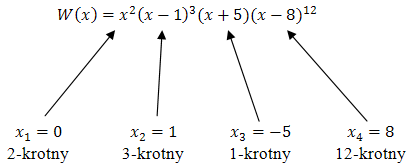
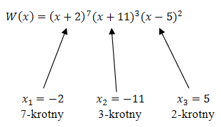
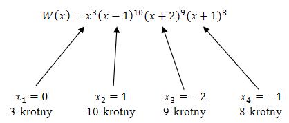
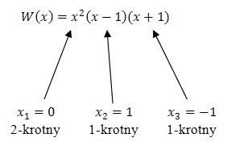
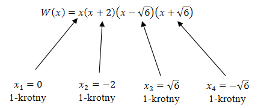

Do wyznaczenia pierwiastków wielomianu oraz ich krotności, należy rozłożyć
wielomian na iloczyn czynników.
Wówczas krotność pierwiastka wielomianu, to potęga
nawiasu, który zeruje dany pierwiastek.
Dla wielomianu zapisanego w postaci iloczynowej łatwo jest odczytać pierwiastki i
ich krotności: 
Dla wielomianu \(W(x) = (x + 2)^7(x + 11)^3(x - 5)^2\) wyznacz pierwiastki oraz ich
krotności.
Pierwiastki wielomianu wyznaczamy rozwiązując proste
równanie wielomianowe: \[\begin{split} (x + 2)^7(x +
11)^3(x - 5)^2 &= 0\\[6pt] x + 2 = 0 \quad &\lor \quad x + 11 = 0 \quad &\lor \quad x - 5 =
0\\[6pt] x = -2 \quad &\lor \quad x = -11 \quad &\lor \quad x = 5 \end{split}\] Teraz określamy
krotności tych pierwiastków: 
Dla wielomianu \(W(x) = x^3(x - 1)^{10}(x + 2)^9(x + 1)^8\) wyznacz pierwiastki i
określ ich krotności.
Pierwiastki wielomianu wyznaczamy rozwiązując równanie
wielomianowe: \[\begin{split} x^3(x - 1)^{10}(x + 2)^9(x + 1)^8 &= 0\\[6pt] x = 0 \quad &\lor
\quad x - 1 = 0 \quad &\lor \quad x + 2 = 0\quad &\lor \quad x + 1 = 0\\[6pt] x = 0 \quad &\lor
\quad x = 1 \quad &\lor \quad x = -2\quad &\lor \quad x = -1 \end{split}\] Teraz określamy
krotności tych pierwiastków: 
Wyznacz pierwiastki wielomianu \(W(x) = x^2(x - 1)(x + 1)\) i określ ich krotności.
Pierwiastki wielomianu wyznaczamy rozwiązując równanie wielomianowe:
\[\begin{split} x^2(x - 1)(x + 1) &= 0\\[6pt] x = 0 \quad &\lor \quad x - 1 = 0 \quad &\lor
\quad x + 1 = 0\\[6pt] x = 0 \quad &\lor \quad x = 1 \quad &\lor \quad x = -1 \end{split}\]
Teraz określamy krotności tych pierwiastków: 
Wyznacz pierwiastki wielomianu \(W(x) = x^4 + 2x^3 - 6x^2 - 12x\) i określ ich
krotności.
Pierwiastki wielomianu wyznaczamy rozwiązując równanie wielomianowe:
\[\begin{split} x^4 + 2x^3 - 6x^2 - 12x &= 0\\[6pt] x(x^3 + 2x^2 - 6x - 12) &= 0\\[6pt] x(x^2(x
+ 2) - 6(x + 2)) &= 0\\[6pt] x(x + 2)(x^2 - 6) &= 0\\[6pt] x(x + 2)(x - \sqrt{6})(x + \sqrt{6})
&= 0\\[6pt] x = 0 \quad &\lor \quad x +2 = 0 \quad &\lor \quad x -\sqrt{6} = 0&\lor \quad x
+\sqrt{6} = 0\\[6pt] x = 0 \quad &\lor \quad x = -2 \quad &\lor \quad x = \sqrt{6}\quad &\lor
\quad x = -\sqrt{6} \end{split}\] Teraz zapisujemy wielomian w postaci iloczynowej i określamy
krotności pierwiastków: 